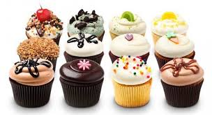
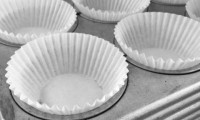
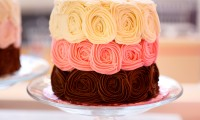
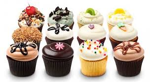
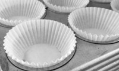
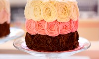

Moringa Cupcake store was founded in 2014 by savannah moringa.Having been inspired by her mum who was a baker as well and the big passion she had for baking savannah found herself distributing cakes door to door,and before she knew it she was in business already.After traded careers in fashion and venture capital to follow her passion for baking and opened Moringa Cupcake in Ngong road,Nairobi.Since 2014,Savvanah has expanded Moringa Cupcake with locations in Kitengela,Karen,Westlands,and Mombasa road.Moringa Cupcake also ships its cupcakes nationwide.